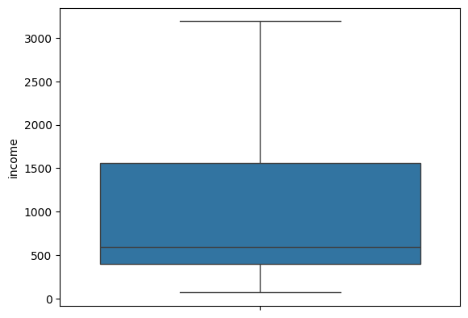
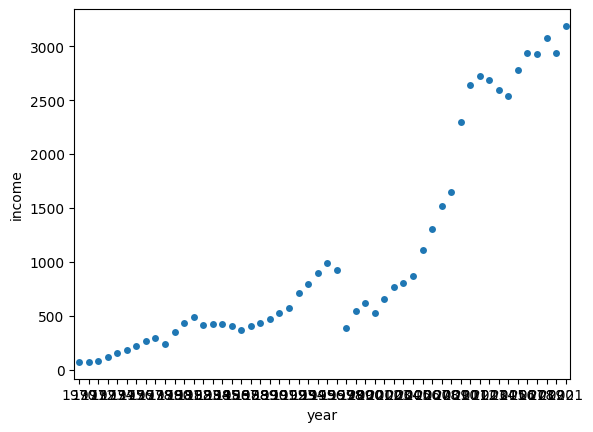
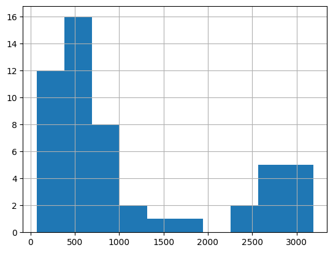
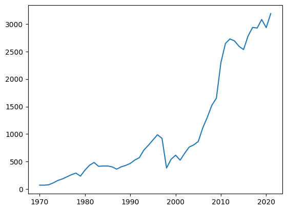
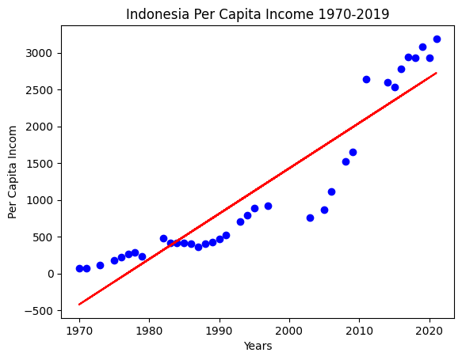
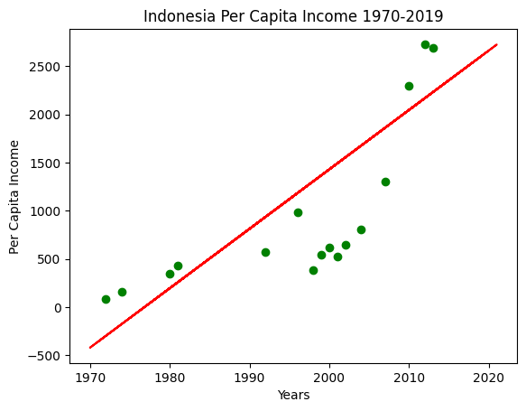

import pandas as pd
import seaborn as sns
import matplotlib.pyplot as pltPrediction Indonesia Adjusted net national income per capita
Disini kita mengambil dataset dari the world bank link : https://data.worldbank.org/indicator/NY.ADJ.NNTY.PC.CD Dataset yang digunakan adalah Pendapatan nasional bersih per kapita tahunan di negara di dunia dalam dolar US. Dataset ini memiliki memiliki 265 baris dan 70 kolom kolom yang berisi data mengenai nama negara, kode negara, dan info lainnya serta pendapatan bersih perkapita dari tahun 1960-2021 yang berupa data float atau data berkoma. disini kita hanya akan mengambil data yang berasal dari negara kita indonesia, untuk dianalisis dan melakukan prediksi menggunakan regresi untuk mengetahui income per capita tahunan di masa mendatang
LOAD DATA
“Kita import beberapa library (pandas, seaborn, dan matplotlib.pyplota) yang akan digunakan dengan mempersingkat panggilannya”
“Mengambil file yang bernama ‘API_NY.ADJ.NNTY.PC.CD_DS2_en_excel_v2_152.xls’ dari home yang telah di upload sebelumnya”
df = pd.read_excel('API_NY.ADJ.NNTY.PC.CD_DS2_en_excel_v2_152.xls')CLEAN DATA
“Melihat identifikasi index yang ada pada file yang akan di gunakan” “ada 4 kolom yang berisi 265 data objek/str dan 66 kolom berisi data float”
df.info()<class 'pandas.core.frame.DataFrame'>
RangeIndex: 265 entries, 0 to 264
Data columns (total 70 columns):
# Column Non-Null Count Dtype
--- ------ -------------- -----
0 Country Name 265 non-null object
1 Country Code 265 non-null object
2 Indicator Name 265 non-null object
3 Indicator Code 265 non-null object
4 1960 0 non-null float64
5 1961 0 non-null float64
6 1962 0 non-null float64
7 1963 0 non-null float64
8 1964 0 non-null float64
9 1965 0 non-null float64
10 1966 0 non-null float64
11 1967 0 non-null float64
12 1968 0 non-null float64
13 1969 0 non-null float64
14 1970 74 non-null float64
15 1971 107 non-null float64
16 1972 107 non-null float64
17 1973 109 non-null float64
18 1974 109 non-null float64
19 1975 109 non-null float64
20 1976 112 non-null float64
21 1977 112 non-null float64
22 1978 112 non-null float64
23 1979 111 non-null float64
24 1980 153 non-null float64
25 1981 158 non-null float64
26 1982 158 non-null float64
27 1983 158 non-null float64
28 1984 160 non-null float64
29 1985 163 non-null float64
30 1986 166 non-null float64
31 1987 167 non-null float64
32 1988 168 non-null float64
33 1989 173 non-null float64
34 1990 178 non-null float64
35 1991 177 non-null float64
36 1992 179 non-null float64
37 1993 191 non-null float64
38 1994 194 non-null float64
39 1995 205 non-null float64
40 1996 206 non-null float64
41 1997 207 non-null float64
42 1998 210 non-null float64
43 1999 211 non-null float64
44 2000 217 non-null float64
45 2001 215 non-null float64
46 2002 217 non-null float64
47 2003 218 non-null float64
48 2004 218 non-null float64
49 2005 219 non-null float64
50 2006 222 non-null float64
51 2007 222 non-null float64
52 2008 222 non-null float64
53 2009 223 non-null float64
54 2010 223 non-null float64
55 2011 226 non-null float64
56 2012 224 non-null float64
57 2013 225 non-null float64
58 2014 226 non-null float64
59 2015 226 non-null float64
60 2016 225 non-null float64
61 2017 225 non-null float64
62 2018 226 non-null float64
63 2019 224 non-null float64
64 2020 221 non-null float64
65 2021 213 non-null float64
66 2022 0 non-null float64
67 2023 0 non-null float64
68 2024 0 non-null float64
69 2025 0 non-null float64
dtypes: float64(66), object(4)
memory usage: 145.1+ KB“Melihat banyak baris dan kolom pada file” “Terdapat 263 baris dan 66 kolom”
df.shape(265, 70)“Untuk melihat semua data”
df| Country Name | Country Code | Indicator Name | Indicator Code | 1960 | 1961 | 1962 | 1963 | 1964 | 1965 | ... | 2016 | 2017 | 2018 | 2019 | 2020 | 2021 | 2022 | 2023 | 2024 | 2025 | |
|---|---|---|---|---|---|---|---|---|---|---|---|---|---|---|---|---|---|---|---|---|---|
| 0 | Aruba | ABW | Adjusted net national income per capita (curre... | NY.ADJ.NNTY.PC.CD | NaN | NaN | NaN | NaN | NaN | NaN | ... | 23167.712306 | 23716.237874 | 24187.066461 | 26027.017124 | 20584.791260 | 24724.866572 | NaN | NaN | NaN | NaN |
| 1 | Africa Eastern and Southern | AFE | Adjusted net national income per capita (curre... | NY.ADJ.NNTY.PC.CD | NaN | NaN | NaN | NaN | NaN | NaN | ... | 1154.554761 | 1298.116409 | 1241.674597 | 1212.689013 | 1098.092611 | 1214.873282 | NaN | NaN | NaN | NaN |
| 2 | Afghanistan | AFG | Adjusted net national income per capita (curre... | NY.ADJ.NNTY.PC.CD | NaN | NaN | NaN | NaN | NaN | NaN | ... | 484.890590 | 497.406029 | 466.570602 | 468.403506 | 475.718084 | 340.523244 | NaN | NaN | NaN | NaN |
| 3 | Africa Western and Central | AFW | Adjusted net national income per capita (curre... | NY.ADJ.NNTY.PC.CD | NaN | NaN | NaN | NaN | NaN | NaN | ... | 1368.364890 | 1289.099402 | 1385.127248 | 1414.741948 | 1377.003088 | 1396.149458 | NaN | NaN | NaN | NaN |
| 4 | Angola | AGO | Adjusted net national income per capita (curre... | NY.ADJ.NNTY.PC.CD | NaN | NaN | NaN | NaN | NaN | NaN | ... | 1206.043537 | 1500.335741 | 1506.725371 | 1327.803449 | 1100.217496 | 1231.925133 | NaN | NaN | NaN | NaN |
| ... | ... | ... | ... | ... | ... | ... | ... | ... | ... | ... | ... | ... | ... | ... | ... | ... | ... | ... | ... | ... | ... |
| 260 | Kosovo | XKX | Adjusted net national income per capita (curre... | NY.ADJ.NNTY.PC.CD | NaN | NaN | NaN | NaN | NaN | NaN | ... | NaN | NaN | NaN | NaN | NaN | NaN | NaN | NaN | NaN | NaN |
| 261 | Yemen, Rep. | YEM | Adjusted net national income per capita (curre... | NY.ADJ.NNTY.PC.CD | NaN | NaN | NaN | NaN | NaN | NaN | ... | 927.102983 | 770.607905 | 601.541198 | NaN | NaN | NaN | NaN | NaN | NaN | NaN |
| 262 | South Africa | ZAF | Adjusted net national income per capita (curre... | NY.ADJ.NNTY.PC.CD | NaN | NaN | NaN | NaN | NaN | NaN | ... | 4613.220186 | 5410.825620 | 5615.654521 | 5311.804417 | 4522.840013 | 5520.947991 | NaN | NaN | NaN | NaN |
| 263 | Zambia | ZMB | Adjusted net national income per capita (curre... | NY.ADJ.NNTY.PC.CD | NaN | NaN | NaN | NaN | NaN | NaN | ... | 979.960863 | 1129.386356 | 1134.046099 | 1003.095119 | 693.425362 | 610.556200 | NaN | NaN | NaN | NaN |
| 264 | Zimbabwe | ZWE | Adjusted net national income per capita (curre... | NY.ADJ.NNTY.PC.CD | NaN | NaN | NaN | NaN | NaN | NaN | ... | 1071.235676 | 903.872575 | 1982.943538 | 1224.803942 | 1171.848837 | 1490.550309 | NaN | NaN | NaN | NaN |
265 rows × 70 columns
“kita cek data kosong padadataframe”
df.isna().sum()| 0 | |
|---|---|
| Country Name | 0 |
| Country Code | 0 |
| Indicator Name | 0 |
| Indicator Code | 0 |
| 1960 | 265 |
| ... | ... |
| 2021 | 52 |
| 2022 | 265 |
| 2023 | 265 |
| 2024 | 265 |
| 2025 | 265 |
70 rows × 1 columns
ADD/REMOVE COLUMNS ETC
“Untuk mempermudah kita hapus saja kolom ‘Country Code’,‘Indicator Name’,‘Indicator Code’ dan data pada tahun 1960-1969 karena datanya kosong serta kolom 2022, 2023, 2024 dan 2025 yang semuanya kosong karena belum didata”
df=df.drop(columns=['Country Code','Indicator Name','Indicator Code','1960','1961','1962','1963','1964','1965','1966','1967','1968','1969','2022','2023','2024','2025'])
df| Country Name | 1970 | 1971 | 1972 | 1973 | 1974 | 1975 | 1976 | 1977 | 1978 | ... | 2012 | 2013 | 2014 | 2015 | 2016 | 2017 | 2018 | 2019 | 2020 | 2021 | |
|---|---|---|---|---|---|---|---|---|---|---|---|---|---|---|---|---|---|---|---|---|---|
| 0 | Aruba | NaN | NaN | NaN | NaN | NaN | NaN | NaN | NaN | NaN | ... | 21395.334635 | 21530.677930 | 22415.993250 | 23278.822727 | 23167.712306 | 23716.237874 | 24187.066461 | 26027.017124 | 20584.791260 | 24724.866572 |
| 1 | Africa Eastern and Southern | NaN | NaN | NaN | NaN | NaN | NaN | NaN | NaN | NaN | ... | 1326.057821 | 1310.155272 | 1326.712853 | 1222.007579 | 1154.554761 | 1298.116409 | 1241.674597 | 1212.689013 | 1098.092611 | 1214.873282 |
| 2 | Afghanistan | 147.709169 | 150.772963 | 128.296489 | 135.151413 | 163.370030 | 173.577068 | 183.125316 | 207.427050 | 227.638311 | ... | 605.752004 | 597.356158 | 575.916815 | 548.968454 | 484.890590 | 497.406029 | 466.570602 | 468.403506 | 475.718084 | 340.523244 |
| 3 | Africa Western and Central | 195.984733 | 138.688825 | 162.424981 | 193.937172 | 241.263768 | 290.420507 | 348.641392 | 347.109452 | 380.018515 | ... | 1452.904757 | 1644.547740 | 1799.557927 | 1555.855850 | 1368.364890 | 1289.099402 | 1385.127248 | 1414.741948 | 1377.003088 | 1396.149458 |
| 4 | Angola | NaN | NaN | NaN | NaN | NaN | NaN | NaN | NaN | NaN | ... | 2865.333338 | 3185.333640 | 3486.753100 | 2371.995619 | 1206.043537 | 1500.335741 | 1506.725371 | 1327.803449 | 1100.217496 | 1231.925133 |
| ... | ... | ... | ... | ... | ... | ... | ... | ... | ... | ... | ... | ... | ... | ... | ... | ... | ... | ... | ... | ... | ... |
| 260 | Kosovo | NaN | NaN | NaN | NaN | NaN | NaN | NaN | NaN | NaN | ... | NaN | NaN | NaN | NaN | NaN | NaN | NaN | NaN | NaN | NaN |
| 261 | Yemen, Rep. | NaN | NaN | NaN | NaN | NaN | NaN | NaN | NaN | NaN | ... | 1019.784909 | 1172.308931 | 1215.004171 | 1250.517222 | 927.102983 | 770.607905 | 601.541198 | NaN | NaN | NaN |
| 262 | South Africa | NaN | 863.783736 | 871.903917 | 1157.031979 | 1382.435364 | 1357.430225 | 1238.181819 | 1311.638778 | 1451.745143 | ... | 6513.706762 | 5889.120635 | 5559.071006 | 5051.035038 | 4613.220186 | 5410.825620 | 5615.654521 | 5311.804417 | 4522.840013 | 5520.947991 |
| 263 | Zambia | NaN | 257.902237 | 280.367614 | 268.838024 | 406.441684 | 358.077259 | 349.507348 | 330.456312 | 372.864378 | ... | 1329.507915 | 1394.072511 | 1361.683462 | 1040.468773 | 979.960863 | 1129.386356 | 1134.046099 | 1003.095119 | 693.425362 | 610.556200 |
| 264 | Zimbabwe | NaN | 350.983483 | 424.247936 | 510.294769 | 587.358371 | 618.669520 | 578.029532 | 560.724736 | 570.002646 | ... | 938.185417 | 1082.237729 | 1055.123316 | 1069.742692 | 1071.235676 | 903.872575 | 1982.943538 | 1224.803942 | 1171.848837 | 1490.550309 |
265 rows × 53 columns
“Untuk mempermudah pemanggilan maka kolom ‘Country Name’ kita ubah manjadi country”
df.rename(columns={'Country Name':'country'}, inplace=True)“Karena kita hanya akan menganalisis prediksi pendapatan perkapita di indonesia, maka kita buat dataframe baru dengan nama df_ind yang hanya menampung data dari negara indonesia”
df_ind=df[df.country=='Indonesia']
df_ind| country | 1970 | 1971 | 1972 | 1973 | 1974 | 1975 | 1976 | 1977 | 1978 | ... | 2012 | 2013 | 2014 | 2015 | 2016 | 2017 | 2018 | 2019 | 2020 | 2021 | |
|---|---|---|---|---|---|---|---|---|---|---|---|---|---|---|---|---|---|---|---|---|---|
| 105 | Indonesia | 72.370876 | 71.73698 | 80.288177 | 113.532211 | 156.966778 | 185.309469 | 222.846571 | 262.189616 | 291.520325 | ... | 2728.134588 | 2691.456374 | 2593.311645 | 2534.722947 | 2782.524671 | 2937.317589 | 2925.859693 | 3080.807225 | 2933.533509 | 3189.243047 |
1 rows × 53 columns
“Untuk mempermudah kita hapus saja kolom country”
df_ind=df_ind.drop(columns=['country'])
df_ind| 1970 | 1971 | 1972 | 1973 | 1974 | 1975 | 1976 | 1977 | 1978 | 1979 | ... | 2012 | 2013 | 2014 | 2015 | 2016 | 2017 | 2018 | 2019 | 2020 | 2021 | |
|---|---|---|---|---|---|---|---|---|---|---|---|---|---|---|---|---|---|---|---|---|---|
| 105 | 72.370876 | 71.73698 | 80.288177 | 113.532211 | 156.966778 | 185.309469 | 222.846571 | 262.189616 | 291.520325 | 236.52339 | ... | 2728.134588 | 2691.456374 | 2593.311645 | 2534.722947 | 2782.524671 | 2937.317589 | 2925.859693 | 3080.807225 | 2933.533509 | 3189.243047 |
1 rows × 52 columns
“Untuk mepermudah kita buat dataframe baru yang mengubah dataframe df_ind dengan berurut ke bawah”
ind=df_ind.melt(var_name='year',
value_name='income')
ind| year | income | |
|---|---|---|
| 0 | 1970 | 72.370876 |
| 1 | 1971 | 71.736980 |
| 2 | 1972 | 80.288177 |
| 3 | 1973 | 113.532211 |
| 4 | 1974 | 156.966778 |
| 5 | 1975 | 185.309469 |
| 6 | 1976 | 222.846571 |
| 7 | 1977 | 262.189616 |
| 8 | 1978 | 291.520325 |
| 9 | 1979 | 236.523390 |
| 10 | 1980 | 345.279423 |
| 11 | 1981 | 433.402958 |
| 12 | 1982 | 484.665562 |
| 13 | 1983 | 414.678610 |
| 14 | 1984 | 420.679056 |
| 15 | 1985 | 420.823471 |
| 16 | 1986 | 404.134060 |
| 17 | 1987 | 363.400700 |
| 18 | 1988 | 405.080252 |
| 19 | 1989 | 430.973343 |
| 20 | 1990 | 467.471845 |
| 21 | 1991 | 528.784760 |
| 22 | 1992 | 571.628706 |
| 23 | 1993 | 709.743703 |
| 24 | 1994 | 797.622759 |
| 25 | 1995 | 892.881164 |
| 26 | 1996 | 987.389234 |
| 27 | 1997 | 922.733477 |
| 28 | 1998 | 383.893981 |
| 29 | 1999 | 541.658433 |
| 30 | 2000 | 616.192538 |
| 31 | 2001 | 526.314351 |
| 32 | 2002 | 651.104702 |
| 33 | 2003 | 764.557368 |
| 34 | 2004 | 803.371953 |
| 35 | 2005 | 865.569609 |
| 36 | 2006 | 1113.108397 |
| 37 | 2007 | 1305.283255 |
| 38 | 2008 | 1522.690233 |
| 39 | 2009 | 1652.477098 |
| 40 | 2010 | 2298.912531 |
| 41 | 2011 | 2645.079286 |
| 42 | 2012 | 2728.134588 |
| 43 | 2013 | 2691.456374 |
| 44 | 2014 | 2593.311645 |
| 45 | 2015 | 2534.722947 |
| 46 | 2016 | 2782.524671 |
| 47 | 2017 | 2937.317589 |
| 48 | 2018 | 2925.859693 |
| 49 | 2019 | 3080.807225 |
| 50 | 2020 | 2933.533509 |
| 51 | 2021 | 3189.243047 |
STATISTICAL
“Melihat rangkuman statistik pada data yang ada di dalam file Mulai dari banyak data, rata2, standar deviasi dan lainnya”
ind.describe()| income | |
|---|---|
| count | 52.000000 |
| mean | 1072.726586 |
| std | 1006.070435 |
| min | 71.736980 |
| 25% | 399.074040 |
| 50% | 593.910622 |
| 75% | 1555.136950 |
| max | 3189.243047 |
“kita cek terlebih dahulu type data pada data frame”
ind.dtypes| 0 | |
|---|---|
| year | object |
| income | float64 |
“Karena kolom year type datanya object/str maka kita harus ubah terlebih dahulu menjadi integer
ind=ind.astype({'year':'int'})“kemudian kita cek kembali dan type data year telah berubah menjadi integer”
ind.dtypes| 0 | |
|---|---|
| year | int64 |
| income | float64 |
DATA VISUALIZATION
Melihat boxplot dari pendapatan perkapita di indonesia
sns.boxplot(ind.income)
sns.stripplot(x=ind.year, y=ind.income)
“Melihat histogram”
ind.income.hist()
“Menampilkan bagaimana grafik perbandingan pendapatan di indonesia dari tahun 1970 - 2019”
plt.plot(ind.year, ind.income)
plt.show()
“Mengambil data year yang di berikan pada X dan data income pada Y”
X=ind.iloc[:, :-1]
Y=ind.iloc[:, 1]“kita import library train_test_split untuk split data train dan data test” “kita identifikasikan data train dan test pad X dan Y dengan rasio 30% data test dan 70% data training” “data untuk test dan train tetap dan tidak berubah maka dibuta randome_state=0”
from sklearn.model_selection import train_test_split
X_train, X_test, y_train, y_test = train_test_split(X, Y, test_size=3/10, random_state=0)“kita import library LinearRegression untuk melihar regresi dari data”
from sklearn.linear_model import LinearRegression
regressor=LinearRegression()
regressor.fit(X_train, y_train)LinearRegression()In a Jupyter environment, please rerun this cell to show the HTML representation or trust the notebook.
On GitHub, the HTML representation is unable to render, please try loading this page with nbviewer.org.
LinearRegression()
“Menampilkan grafik regresi untuk data train dengan modul matplotlib.pyplot” “sumbu x dalam year dan sumbu y sebagai pendapatan”
plt.scatter(X_train, y_train, color="blue")
plt.plot(X_train, regressor.predict(X_train), color="red")
plt.title("Indonesia Per Capita Income 1970-2019")
plt.xlabel("Years")
plt.ylabel("Per Capita Incom")
plt.show()
“Menampilkan grafik regresi untuk data test dengan modul matplotlib.pyplot” “sumbu x dalam year dan sumbu y sebagai pendapatan”
plt.scatter(X_test, y_test, color="green")
plt.plot(X_train, regressor.predict(X_train), color="red")
plt.title("Indonesia Per Capita Income 1970-2019")
plt.xlabel("Years")
plt.ylabel("Per Capita Income")
plt.show()
CONCLUSION
“Kita buat fungsi prediksi untuk pendapatan berdasarkan nilai regresi dari data”
y_pred = regressor.predict(X_test)“Melihat Prediksi Jumlah pendapatan perkapita pada tahun yang akan datang” , kita menggunakan error handling untuk mengantisipasi kesalahan masukkan yang akan diminta, errror handling yang digunakan adalah ValueError
try:
n=int(input("Masukkan Tahun : "))
except ValueError:
print("Masukkan Harus Berupa Angka ! !")
if n>2019 :
Income_pred = regressor.predict([[n]])
print("Jumlah pendapatan perkapita di Indonesia pada tahun {} adalah sekitar $".format(n),int(Income_pred))
else :
print("Tahun harus lebih dari 2019")Masukkan Tahun : 2030
Jumlah pendapatan perkapita di Indonesia pada tahun 2030 adalah sekitar $ 3279/usr/local/lib/python3.12/dist-packages/sklearn/utils/validation.py:2739: UserWarning: X does not have valid feature names, but LinearRegression was fitted with feature names
warnings.warn(
/tmp/ipykernel_332/3056458282.py:7: DeprecationWarning: Conversion of an array with ndim > 0 to a scalar is deprecated, and will error in future. Ensure you extract a single element from your array before performing this operation. (Deprecated NumPy 1.25.)
print("Jumlah pendapatan perkapita di Indonesia pada tahun {} adalah sekitar $".format(n),int(Income_pred))” Dari hasil analisis data2 pendapatan perkapita di indonesia dari tahun 1970 hingga 2021, kita dapat memprediksi besarnya pendapatan perkapia tahunan pada tahun 2030 adalah 3279 dolar US